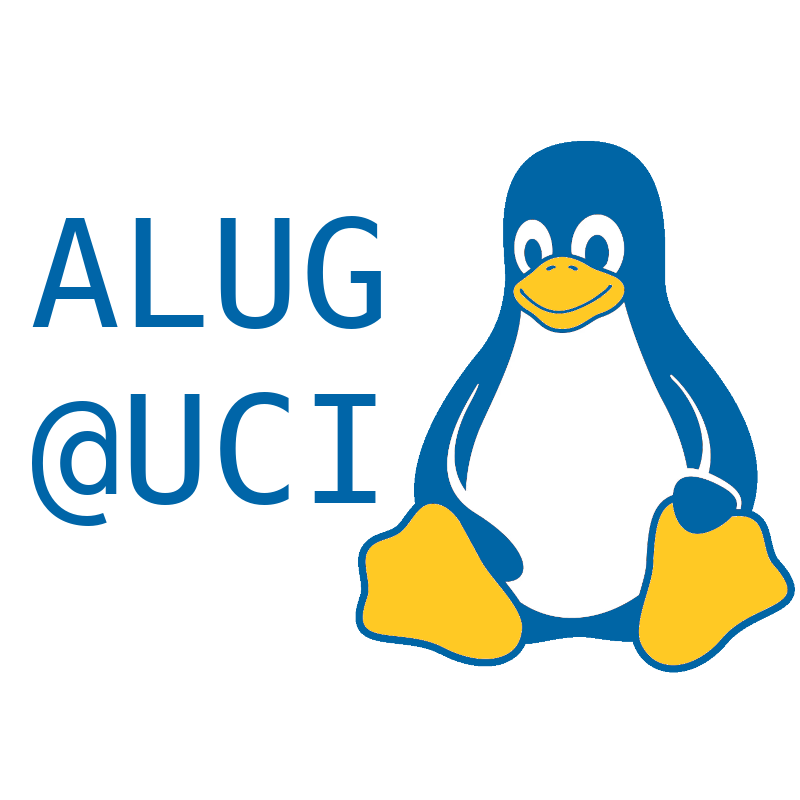
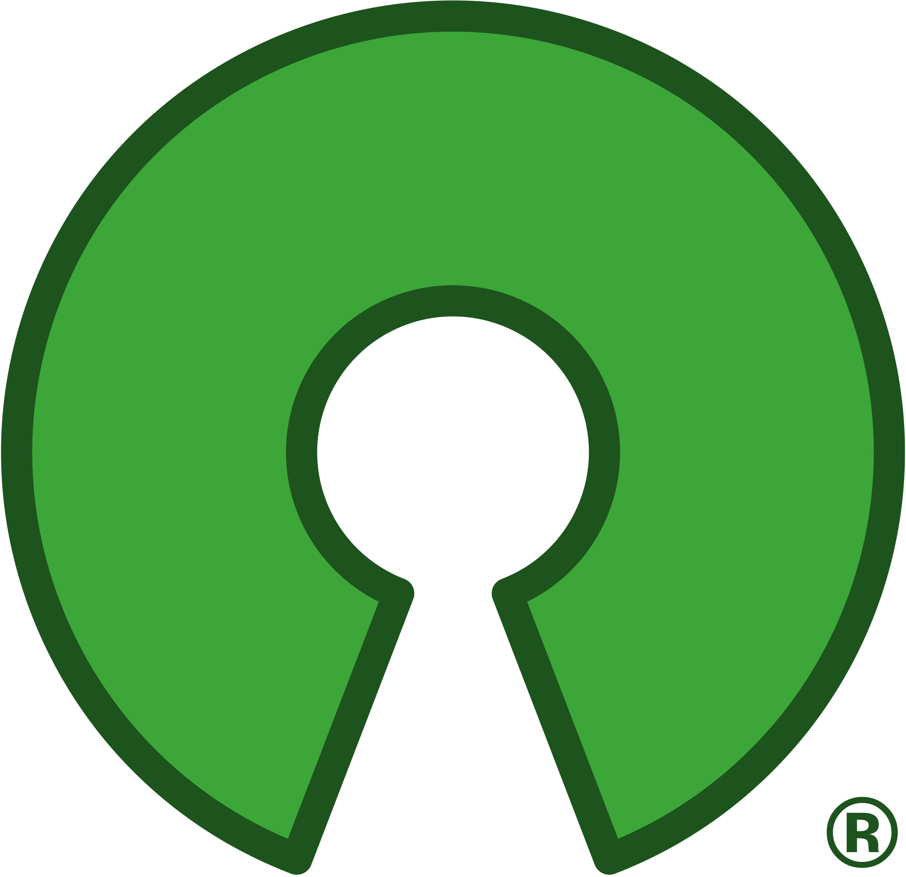

Projects
ALUG@UCI projects is our Git server where we encourage UCI students to create and work on open-source projects.
What can I do?

Create cool projects with fellow students

Get into open-source by contributing or starting a project
Develop practical skills, like reading code and using Git
Why open-source?
Open-source software (OSS) is the core of Linux and other software. It’s known to be a way for programmers to break into software engineering, since contributing to OSS demonstrates the ability to read and work with other people’s code in sometimes very large codebases.
Aside from personal development, open-source is a community service, bringing people together to accomplish a lot more. ALUG@UCI-hosted projects aims to be an open platform for student-led projects and to enhance the UCI student developer community.
Also, projects on our Git server do not have to be open-source, so feel free to use it as a regular Git server for your projects.